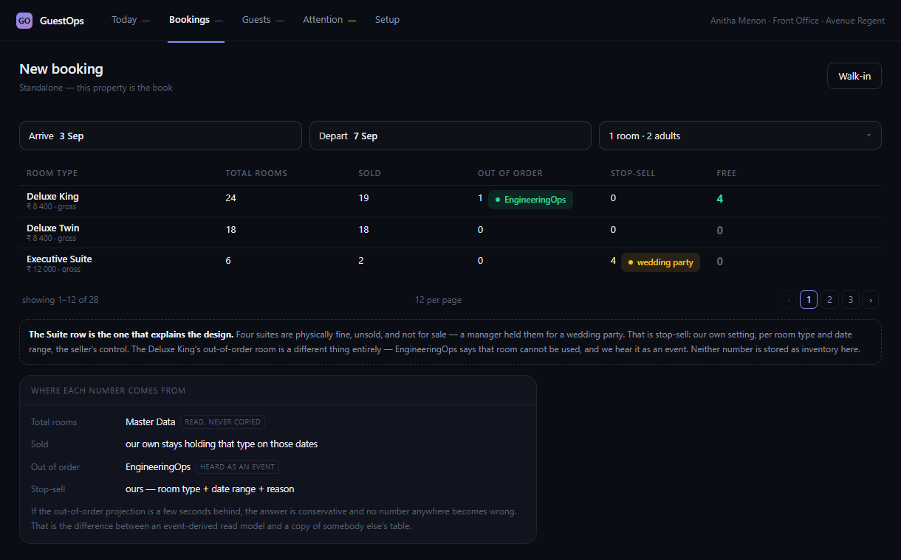
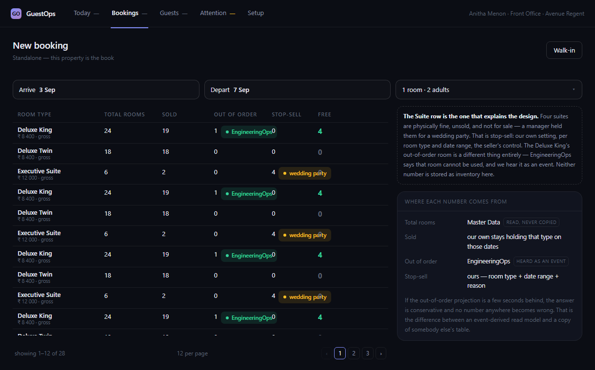
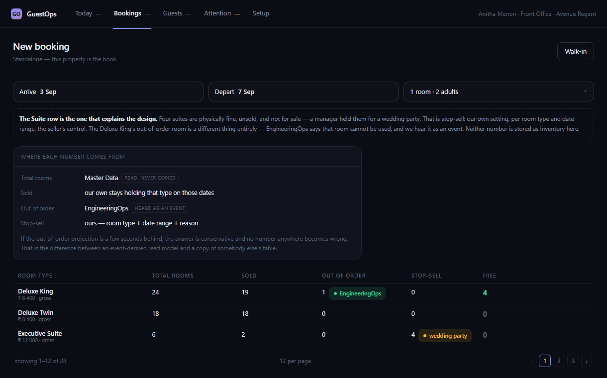
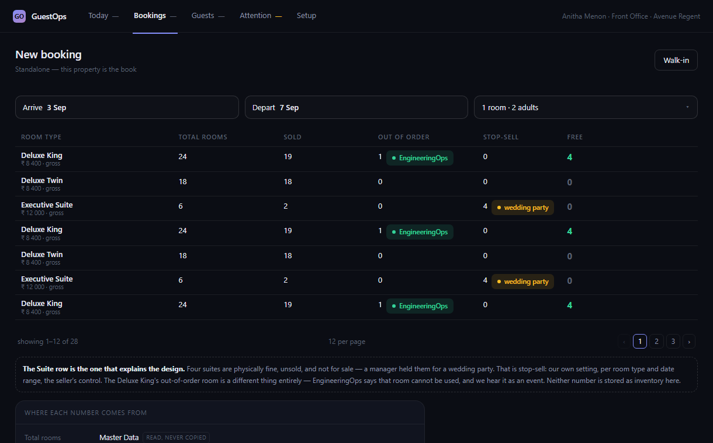

New booking — where the list's space goes
The page-64 audit's G7 on one screen. Every list screen now follows CORE-Q28: only the list scrolls, and the pager sits at the bottom of the window. New booking is the exception, because frame 14 — as you approved it on 5 September — puts a note and a card under the pager. They take their height first, so the list gets whatever is left: 152 px, two rooms visible at a 1220 × 760 window.
Each picture below is the real build, not a redrawing: the running screen with the option's layout applied, then measured. All four show the same page — 12 room types on page 1 of 28 — so the numbers compare. Pick one, or keep frame 14 as it is. Keeping it is a legitimate answer: it would be recorded as an approved deviation for this one screen.

Keep it
- List
- 152 px · 2 of 12 rows visible
- Panels
- both on screen, below the pager
- Scrolls
- the list only

Panels beside the list
- List
- 471 px · 10 of 12 rows visible
- Panels
- both on screen, a 380 px column
- Scrolls
- the list only — CORE-Q28 holds

Panels above the list
- List
- 152 px · 2 of 12 rows visible
- Panels
- both on screen, above the list
- Scrolls
- the list only

The list given a minimum height
- List
- 331 px floor · 7 of 12 rows visible
- Panels
- note on screen, card below the window
- Scrolls
- the list and the page
Measured 2026-09-19 in the GuestOps capture harness (not a
Kernel), New booking, list state MP, 1220 × 760, one device pixel per CSS pixel.
Option C's floor is the header plus seven rows as the build draws them (331 px),
read from the page before the floor was applied. The script and its
measurements sit beside the pictures: capture.mjs,
measured.json. The dates in the pictures are the fixture's recorded
strings, which the service formats today — the audit's I1, being fixed next, so
their locale is not stated here because nothing chose one.